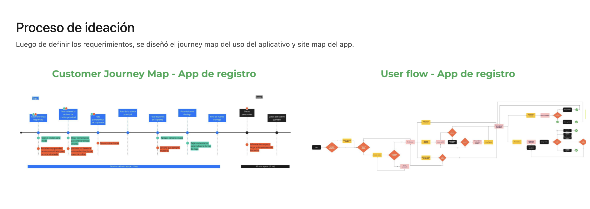
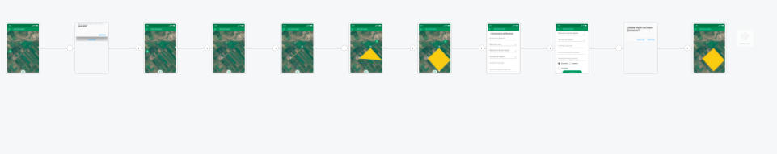

El reto
Para agros.tech, una startup rural, diseñé una app de registro de parcelas agrícolas. El reto: ¿cómo registrar actividades agrícolas en zonas rurales de baja cobertura, con acceso limitado a conectividad?
UI/UX Designer end-to-end (research + diseño)
Cubrí el proceso completo: research de campo, definición de flujos, diseño de alta fidelidad y validación con un customer journey map construido junto a agricultores reales.
DNI en vez de formulario largo — y ajustes basados en campo real
Evalué dos alternativas de registro: un formulario largo tradicional vs. verificación ligera por DNI del agricultor. Elegí la segunda para reducir fricción en un contexto de baja alfabetización digital y conectividad limitada — menos decisiones, más velocidad (Ley de Hick).

Customer Journey Map y User Flow — documentando fricciones reales detectadas en campo (parcelas grandes, dificultad para tomar muestras, información extensa)
Validé el flujo con ese journey map en campo y ajusté puntos de fricción reales: cámara integrada en vez de fotos manuales, campos de comentario en vez de opciones rígidas para forma de riego.

Flujo final de la app — de georreferencia de parcela a confirmación de registro
Zonas rurales de baja cobertura
El contexto de conectividad limitada condicionó cada decisión de interfaz — desde priorizar campos mínimos hasta evitar dependencias de carga pesada en tiempo real durante el registro en campo.
30+ parcelas registradas, tiempo reducido a la mitad
Más de 30 parcelas registradas y 20+ agricultores digitalizados, reduciendo el tiempo del proceso a la mitad (de ~50-60 min a ~35 min por hectárea).